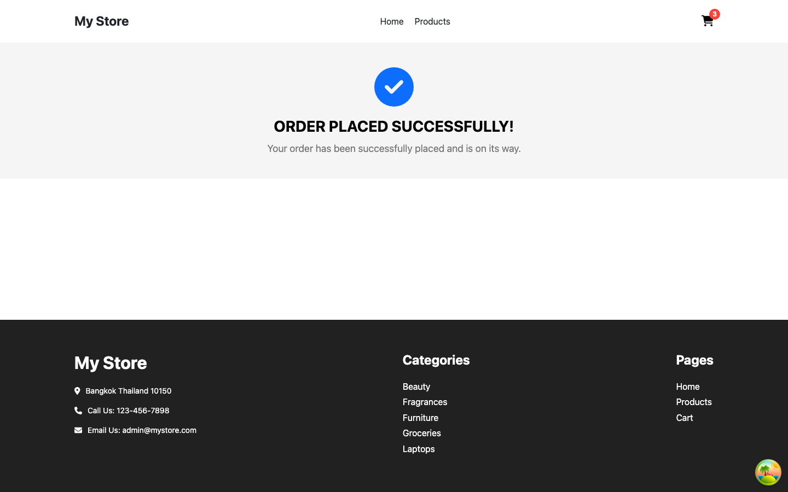

บทเรียน 19 · สร้างแอปทีละหน้า (Building Page by Page)
Checkout และ Order Success
Checkout & Order Success
หน้า Cart ใช้งานได้จริงครบวงจรแล้ว แต่ปุ่ม Checkout ยังพาไปที่ยังไม่มีอยู่จริง บทสุดท้ายของสัปดาห์นี้จะสร้างปลายทางนั้น พร้อมกับหน้า Order Success ที่ปิดท้าย flow การซื้อทั้งหมด แล้ววน The Loop เป็นครั้งสุดท้ายของคอร์สนี้ เหมือนบทที่ 18 งานส่วนแรกไม่ใช่ Agent แต่เป็นการออกแบบ schema สำหรับ validate ฟอร์มด้วยมือก่อน ฟอร์มเป็นเรื่องคุ้นเคยอยู่แล้วจาก Week_04 บทเรียน 22 (Uncontrolled Forms) และบทเรียน 32 (Form Actions) — รอบนี้ต่างออกไปตรงที่เราจะ validate ด้วย schema ก่อนปล่อยข้อมูลออกจากฟอร์ม แทนที่จะเชื่อ input ดิบ ๆ แล้วค่อยให้ Agent ช่วยประกอบหน้าตาที่เหลือ
🎯 เป้าหมาย
![ภาพหน้าจอหน้า Checkout ของแอปต้นแบบ My Store บนจอเดสก์ท็อป แถบเทาด้านบนแสดงคำว่า Checkout ฝั่งซ้ายมีกล่อง Shipping Address (ช่อง Address, Email, Phone Number ว่างอยู่) กับปุ่ม Submit สีน้ำเงินเข้ม ต่อด้วยกล่อง Delivery Options ที่ Standard Delivery ถูกเลือกอยู่และ Express Delivery ยังไม่ได้เลือก และกล่อง Payment Options ที่ Cash on Delivery เลือกอยู่และ Bank Transfer ยังไม่ได้เลือก ฝั่งขวามีกล่อง Summary Order แสดงสินค้า 2 ชิ้นพร้อมรูป ชื่อ ราคาคูณจำนวน และราคารวมต่อชิ้น และกล่อง Billing Summary แสดง Sub Total $49.97, Shipping $5.99, Total $55.96 พร้อมปุ่ม Place Order สีฟ้าอ่อนกว่าปุ่ม Submit อย่างเห็นได้ชัด](images/checkout_desktop.png)

สังเกตสองปุ่มในภาพ Checkout ให้ดี — "Submit" อยู่ใต้ฟอร์ม Shipping Address ส่วน "Place Order" อยู่ในกล่อง Billing Summary ทำไมต้องมีสองปุ่ม? เพราะการกรอกที่อยู่กับการยิง order จริงเป็นคนละขั้นตอนกัน ต้องกรอกและ "ยืนยัน" ที่อยู่จัดส่งให้ผ่านก่อน ปุ่ม Place Order ถึงจะกดได้ ในภาพนี้ยังไม่มีใครกด Submit เลยสักครั้ง (ยังไม่เห็นสรุปที่อยู่ที่กรอกไว้อยู่เหนือฟอร์ม) ปุ่ม Place Order จึงอยู่ในสถานะ disabled — สีจางกว่าปุ่ม Submit อย่างเห็นได้ชัดก็เพราะเหตุผลนี้เอง ไม่ใช่แค่เป็นปุ่มสไตล์ต่างกันเฉย ๆ ถือว่างานของบทนี้ "เสร็จ" เมื่อ:
- route
/checkout: ฟอร์มที่อยู่ (validate ด้วย zod), Delivery Options, Payment Options, Summary Order และ Billing Summary - กรอกที่อยู่แล้วกด Submit เพื่อ "ยืนยัน" ก่อน (เก็บไว้ใน state) — ปุ่ม Place Order กดได้ก็ต่อเมื่อมีที่อยู่ที่ยืนยันแล้วเท่านั้น
- กด Place Order →
POST /carts/add→ สำเร็จแล้วเคลียร์ตะกร้า + นำทางไป/order/success - หน้า Order Success: ไอคอนเช็ค, ข้อความขอบคุณ, ปุ่มกลับหน้าแรก (เพิ่มเข้าไปเองแม้ screenshot จะไม่มีปุ่มนี้ก็ตาม — เดี๋ยวอธิบายเหตุผลตอน 🔧)
router.tsxครบทั้ง 6 route ตามตาราง routes ของทั้งโปรเจกต์ พร้อม error boundary ปิดท้ายทั้งแอป
ออกแบบ schema ก่อน — validation คือ contract
เหตุผลเดียวกับที่ query factory ในบทที่ 15 และ state ของตะกร้าในบทที่ 18 เขียนเอง — schema คือ "สัญญา" ว่าข้อมูลแบบไหนถือว่าถูกต้อง พลาดจุดเดียวในนี้แปลว่ายอมให้ order ที่ข้อมูลไม่ครบหลุดออกไปได้ ไม่ใช่เรื่องที่ควรปล่อยให้ Agent เดาเอง
// src/features/checkout/schema.ts
import { z } from "zod";
export const checkoutAddressSchema = z.object({
address: z.string().min(1, "Address is required"),
email: z
.string()
.min(1, "Email is required")
.pipe(z.email("Enter a valid email address")),
phone: z.string().min(1, "Phone number is required"),
});
export type CheckoutAddressFormData = z.infer<typeof checkoutAddressSchema>;
💡 สังเกต .pipe(z.email(...)) ให้ดี — บทความเก่า ๆ เกี่ยวกับ zod ส่วนใหญ่จะเขียน z.string().email("...") เป็น method บน z.string() ตรง ๆ แต่ตั้งแต่ zod 4 เป็นต้นไป .email() แบบ method chain ถูกเลิกใช้ ย้ายไปเป็น validator แยกต่างหากชื่อ z.email() ที่ต้องต่อด้วย .pipe() แทน เหตุผลคือ zod 4 แยก "string validator ทั่วไป" ออกจาก "string format validator" (email, url, uuid ฯลฯ) ให้ประกาศ type ชัดเจนกว่าเดิม ถ้าเห็นโค้ดเก่าที่ยังเขียน .email() ตรง ๆ นั่นคือสัญญาณว่าใช้ zod เวอร์ชันต่ำกว่า 4 — ของเราติดตั้งจากบทที่ 9 เป็นเวอร์ชันล่าสุดอยู่แล้วจึงต้องเขียนแบบ .pipe() นี้เท่านั้น
consts.ts: ตัวเลือก delivery และ payment
ตัวเลือกทั้งสี่ตัวมาจาก Reference Facts ของแอปต้นแบบตรง ๆ — ราคาและคำอธิบายต้องตรงเป๊ะกับที่ผู้ใช้จะเห็นในบิล เขียนเป็น data แยกจาก JSX ตั้งแต่แรก เพื่อไม่ให้ใครต้องมาแก้ราคาสองที่ทีหลัง
// src/features/checkout/types.ts
export interface DeliveryOption {
id: number;
name: string;
description: string;
price: number;
}
export interface PaymentOption {
id: number;
name: string;
description: string;
}
// src/features/checkout/consts.ts
import { DeliveryOption, PaymentOption } from "./types";
export const deliveryOptions: DeliveryOption[] = [
{ id: 1, name: "Standard Delivery", description: "Approx 5 to 7 Days", price: 5.99 },
{ id: 2, name: "Express Delivery", description: "Approx 1 - 2 Days", price: 15.99 },
];
export const paymentOptions: PaymentOption[] = [
{ id: 3, name: "Cash on Delivery", description: "Pay cash when your order is delivered." },
{ id: 4, name: "Bank Transfer", description: "Pay directly from your bank account." },
];
api.ts: ยิง order ไปที่ dummyjson
POST /carts/add จาก Reference Facts เป็น endpoint จำลองการสั่งซื้อ — dummyjson ไม่ได้ตรวจสอบ payload อย่างเข้มงวด แต่คืนค่า { id } กลับมาเหมือนสร้างออเดอร์จริง เพียงพอสำหรับจำลองขั้นตอนนี้ในคอร์สนี้
// src/features/checkout/api.ts
import { apiClient } from "@/shared/api/client";
import { CheckoutAddressFormData } from "@/features/checkout/schema";
export interface PlaceOrderPayload {
userId: number;
products: { id: number; quantity: number }[];
address: CheckoutAddressFormData;
}
export interface PlaceOrderResponse {
id: number;
}
export async function placeOrder(payload: PlaceOrderPayload): Promise<PlaceOrderResponse> {
const { data } = await apiClient.post<PlaceOrderResponse>("/carts/add", payload);
return data;
}
ฟอร์มที่อยู่: Input component และ CheckoutAddressForm
ก่อนเขียนฟอร์มต้องมี Input กลางที่ผูก label, error message และ aria-invalid ไว้ในที่เดียว — pattern เดียวกับ Button จากบทที่ 13 แค่ย้ายจากปุ่มมาเป็นช่องกรอก ต้องใช้ forwardRef เพราะ react-hook-form ต้อง attach ref ตรงเข้า input จริงผ่าน register
// src/shared/components/Input/Input.tsx
import { InputHTMLAttributes, forwardRef } from "react";
interface InputProps extends InputHTMLAttributes<HTMLInputElement> {
label: string;
error?: string;
}
const Input = forwardRef<HTMLInputElement, InputProps>(({ label, error, id, name, ...rest }, ref) => {
const inputId = id ?? name;
return (
<div>
<label htmlFor={inputId} className="mb-1 block text-sm font-medium text-gray-700">
{label}
</label>
<input
ref={ref}
id={inputId}
name={name}
aria-invalid={error ? "true" : undefined}
className={`w-full rounded-md border px-3 py-2 focus-visible:outline-none focus-visible:ring-2 focus-visible:ring-primary/50 ${
error ? "border-danger" : "border-gray-300"
}`}
{...rest}
/>
{error && <p className="mt-1 text-sm text-danger">{error}</p>}
</div>
);
});
Input.displayName = "Input";
export default Input;
// src/features/checkout/components/CheckoutAddressForm/CheckoutAddressForm.tsx
import { useForm } from "react-hook-form";
import { zodResolver } from "@hookform/resolvers/zod";
import { checkoutAddressSchema, CheckoutAddressFormData } from "@/features/checkout/schema";
import Input from "@/shared/components/Input/Input";
import Button from "@/shared/components/Button/Button";
interface CheckoutAddressFormProps {
onSubmit: (data: CheckoutAddressFormData) => void;
}
export default function CheckoutAddressForm({ onSubmit }: CheckoutAddressFormProps) {
const {
register,
handleSubmit,
formState: { errors },
} = useForm<CheckoutAddressFormData>({
resolver: zodResolver(checkoutAddressSchema),
});
return (
<form onSubmit={handleSubmit(onSubmit)} className="space-y-4">
<Input label="Address" placeholder="Enter Address" {...register("address")} error={errors.address?.message} />
<div className="grid gap-4 sm:grid-cols-2">
<Input label="Email" type="email" placeholder="Enter Email" {...register("email")} error={errors.email?.message} />
<Input label="Phone Number" placeholder="Enter Phone Number" {...register("phone")} error={errors.phone?.message} />
</div>
<Button type="submit">Submit</Button>
</form>
);
}
handleSubmit(onSubmit) ทำสองอย่างให้ในบรรทัดเดียว: validate ข้อมูลทั้งฟอร์มด้วย checkoutAddressSchema ก่อน ถ้าผ่านค่อยเรียก onSubmit ที่รับมาเป็น prop พร้อมข้อมูลที่ type ปลอดภัยแล้ว ถ้าไม่ผ่าน errors จะเต็มไปด้วย error message ที่ Input แต่ละช่องอ่านไปแสดงเองผ่าน prop error ไม่ต้องเขียน if/else ตรวจเองสักบรรทัด
📝 เขียน Prompt
สร้างหน้า Checkout ของเว็บ "My Store" ตาม screenshot ที่แนบมา (path /checkout)
บริบท: โปรเจกต์ my-store มี CheckoutAddressForm, deliveryOptions/paymentOptions จาก features/checkout/consts.ts, useCart(), Button และ formatPrice ที่มีอยู่แล้ว
โครงสร้างจากบนลงล่าง:
- แถบเทาด้านบนแสดงคำว่า Checkout
- สองคอลัมน์บนจอกว้าง: ซ้าย (กว้างกว่า) มีกล่อง Shipping Address (ใช้ CheckoutAddressForm ที่มีอยู่), กล่อง Delivery Options, กล่อง Payment Options — สองกล่องหลังเป็นการ์ดเลือกได้ทีละหนึ่ง (radio) ไม่ใช่แค่จุดกลม ๆ ธรรมดา ทั้งการ์ดกดเลือกได้ ไม่ใช่แค่จุดเล็ก ๆ
- ขวา (แคบกว่า): กล่อง Summary Order แสดงสินค้าในตะกร้าทุกชิ้น (รูป, ชื่อ, ราคา×จำนวน, ราคารวม) และกล่อง Billing Summary (Sub Total, Shipping, Total, ปุ่ม Place Order)
ข้อกำหนดทางเทคนิค:
- ดึงตะกร้าจาก useCart() คำนวณ Sub Total, Shipping (ตามตัวเลือก delivery ที่เลือก), Total เอง
- Delivery/Payment options render จาก deliveryOptions/paymentOptions ที่มีอยู่ ห้ามพิมพ์ชื่อ/ราคาตรง ๆ ใน JSX
- บนมือถือ กล่อง Summary Order/Billing Summary ต้องขึ้นก่อนฟอร์ม ไม่ใช่ตกไปอยู่ล่างสุดหลังเลื่อนผ่านฟอร์มทั้งหมด
- ใช้ Button และ formatPrice ที่มีอยู่ ปุ่ม Place Order กด disabled ได้เมื่อยังไม่พร้อม
ขอบเขต: ยังไม่ต้องต่อ mutation หรือ submit จริง แค่โครง UI และ state ของการเลือกตัวเลือกพอ🤖 สิ่งที่ Agent สร้าง
วาง prompt พร้อมรูป checkout_desktop.png แล้วปล่อยให้ Agent ทำงาน เริ่มจาก RadioInputOption — การ์ดเลือก delivery/payment ที่ prompt ขอไว้
// src/features/checkout/components/RadioInputOption/RadioInputOption.tsx
interface RadioInputOptionProps {
id: string;
name: string;
checked: boolean;
title: string;
description: string;
onSelect: () => void;
}
export default function RadioInputOption({ id, name, checked, title, description, onSelect }: RadioInputOptionProps) {
return (
<label htmlFor={id} className="block cursor-pointer">
<input type="radio" id={id} name={name} checked={checked} onChange={onSelect} className="peer sr-only" />
<span className="block rounded-lg border border-gray-200 p-4 peer-checked:border-primary peer-checked:bg-primary/5 peer-focus-visible:ring-2 peer-focus-visible:ring-primary/50">
<span className="block font-medium">{title}</span>
<span className="block text-sm text-gray-500">{description}</span>
</span>
</label>
);
}
💡 screenshot ต้นแบบใช้ radio ธรรมดาแค่จุดกลม ๆ เท่านั้น แต่ prompt ด้านบนขอการ์ดเลือกที่กดได้ทั้งกล่อง — นี่คือการปรับปรุงที่ตั้งใจทำให้ดีกว่าต้นฉบับ ไม่ใช่สิ่งที่เห็นใน screenshot จริง <input> ยังเป็น radio จริงอยู่ข้างใน แค่ซ่อนด้วย sr-only (ซ่อนจากตาเท่านั้น ยัง focus/กดด้วยคีย์บอร์ดได้ปกติ) แล้วให้ <span> ที่อยู่ถัดจากมันวาดกรอบ+พื้นหลังไฮไลต์แทนด้วย peer-checked: — ต้องเป็น sibling กันเท่านั้น peer-checked ถึงจะทำงาน ถ้า class นี้อยู่บน parent ของ input จะไม่มีผลอะไรเลย
ส่วนตัวหน้า Checkout.tsx เอง Agent เขียนทุกอย่างรวมไว้ในไฟล์เดียว — state ของฟอร์ม, การคำนวณเงิน, การยิง order, และ JSX ทั้งหมด
// src/pages/Checkout/Checkout.tsx (เวอร์ชันแรกจาก Agent)
import { useMemo, useState } from "react";
import { useMutation } from "@tanstack/react-query";
import { useCart } from "@/features/cart/useCart";
import useProductRoute from "@/shared/hooks/useProductRoute";
import { placeOrder } from "@/features/checkout/api";
import { CheckoutAddressFormData } from "@/features/checkout/schema";
import CheckoutAddressForm from "@/features/checkout/components/CheckoutAddressForm/CheckoutAddressForm";
import RadioInputOption from "@/features/checkout/components/RadioInputOption/RadioInputOption";
import Button from "@/shared/components/Button/Button";
import { formatPrice } from "@/shared/utils/price.utils";
export default function Checkout() {
const { cart, clearCart } = useCart();
const { goToOrderSuccess } = useProductRoute();
const [checkoutAddress, setCheckoutAddress] = useState<CheckoutAddressFormData | null>(null);
const [deliveryId, setDeliveryId] = useState(1);
const [paymentId, setPaymentId] = useState(3);
const subtotal = useMemo(
() => cart.items.reduce((sum, item) => sum + item.price * item.quantity, 0),
[cart.items],
);
const shipping = deliveryId === 1 ? 5.99 : 15.99;
const total = subtotal + shipping;
const { mutate: onPlaceOrder, isPending } = useMutation({
mutationFn: () =>
placeOrder({
userId: 1,
products: cart.items.map((item) => ({ id: item.id, quantity: item.quantity })),
address: checkoutAddress!,
}),
onSuccess: () => {
clearCart();
goToOrderSuccess();
},
});
return (
<div>
<div className="bg-gray-100 py-8 text-center"><h1 className="text-2xl font-bold">Checkout</h1></div>
<div className="mx-auto grid max-w-7xl gap-8 px-4 py-10 sm:px-6 lg:grid-cols-3 lg:px-8">
<div className="space-y-6 lg:col-span-2">
<div className="rounded-lg border border-gray-200 p-5">
<h2 className="mb-4 font-bold">Shipping Address</h2>
<CheckoutAddressForm onSubmit={setCheckoutAddress} />
</div>
<div className="rounded-lg border border-gray-200 p-5">
<h2 className="mb-4 font-bold">Delivery Options</h2>
<div className="space-y-3">
<RadioInputOption id="delivery-1" name="delivery" checked={deliveryId === 1} title="Standard Delivery" description="Approx 5 to 7 Days" onSelect={() => setDeliveryId(1)} />
<RadioInputOption id="delivery-2" name="delivery" checked={deliveryId === 2} title="Express Delivery" description="Approx 1 - 2 Days" onSelect={() => setDeliveryId(2)} />
</div>
</div>
<div className="rounded-lg border border-gray-200 p-5">
<h2 className="mb-4 font-bold">Payment Options</h2>
<div className="space-y-3">
<RadioInputOption id="payment-3" name="payment" checked={paymentId === 3} title="Cash on Delivery" description="Pay cash when your order is delivered." onSelect={() => setPaymentId(3)} />
<RadioInputOption id="payment-4" name="payment" checked={paymentId === 4} title="Bank Transfer" description="Pay directly from your bank account." onSelect={() => setPaymentId(4)} />
</div>
</div>
</div>
<div className="space-y-6">
<div className="rounded-lg border border-gray-200 p-5">
<h2 className="mb-4 font-bold">Summary Order</h2>
{cart.items.map((item) => (
<div key={item.id} className="flex items-center gap-3 py-2">
<img src={item.image} alt={item.title} className="h-12 w-12 rounded object-cover" />
<div className="flex-1">
<p className="text-sm font-medium">{item.title}</p>
<p className="text-xs text-gray-500">{formatPrice(item.price)} X {item.quantity}</p>
</div>
<span className="font-semibold text-primary">{formatPrice(item.price * item.quantity)}</span>
</div>
))}
</div>
<div className="rounded-lg border border-gray-200 p-5">
<h2 className="mb-4 font-bold">Billing Summary</h2>
<div className="flex justify-between py-1"><span className="text-gray-500">Sub Total</span><span>{formatPrice(subtotal)}</span></div>
<div className="flex justify-between py-1"><span className="text-gray-500">Shipping</span><span>{formatPrice(shipping)}</span></div>
<div className="mt-2 flex justify-between border-t border-gray-200 pt-2 text-lg font-bold"><span>Total</span><span>{formatPrice(total)}</span></div>
<Button className="mt-4 w-full" disabled={!checkoutAddress || isPending} onClick={() => onPlaceOrder()}>
{isPending ? "กำลังส่ง..." : "Place Order"}
</Button>
</div>
</div>
</div>
</div>
);
}
ใช้งานได้จริงตามที่ขอทุกจุดเผิน ๆ — แต่ไฟล์นี้ทำทุกอย่างเลย: จำ state ของฟอร์ม คำนวณเงิน ยิง mutation และวาด JSX ทั้งหมดปนกันในไฟล์เดียว ต้องไปดูใน 🔍 ก่อนถึงจะเห็นว่านี่คือปัญหา
🔍 ตรวจทาน
responsive — คอนเทนเนอร์นอกสุดใช้ grid gap-8 lg:grid-cols-3 เฉย ๆ ไม่มีการจัดลำดับใหม่สำหรับจอแคบ ย่อจอลงมาที่ 390px แล้วลำดับ DOM เดิม (ฟอร์ม → Delivery → Payment → Summary → Billing) กลายเป็นลำดับที่เห็นบนจอไปตรง ๆ ผู้ใช้ต้องเลื่อนผ่านฟอร์มที่อยู่และตัวเลือกทั้งหมดก่อน ถึงจะเห็นว่าต้องจ่ายเท่าไหร่และเจอปุ่ม Place Order — ปัญหารูปแบบเดียวกับ CategoryMenu ในบทที่ 16: ไม่ได้ทับกันเหมือนบั๊กที่เจอในแอปต้นแบบตรง ๆ แต่เป็น UX ที่แย่กว่าที่ควรเป็น prompt สั่งไว้ชัดเจนแล้วว่า mobile ต้องเห็นสรุปก่อนฟอร์ม แต่ Agent ไม่ได้ทำตาม
accessibility — Input และ RadioInputOption ที่เขียนไว้เองก่อนหน้านี้ผ่านหมดตั้งแต่รอบแรก (label จริงทุกช่อง, aria-invalid ติดเมื่อ error, radio เลือกด้วยคีย์บอร์ดได้เพราะเป็น <input type="radio"> จริง, และการ์ดที่มองเห็นก็มี peer-focus-visible:ring-2 วาดกรอบ focus ให้ด้วยตั้งแต่แรก ไม่ปล่อยให้โฟกัสหายไปทั้งที่กด Tab ไปถึงจริง) แต่ปุ่ม Place Order ยังไม่ผ่านเต็มที่ — ตอน disabled screen reader จะอ่านแค่ "Place Order, dimmed" โดยไม่บอกเลยว่าทำไมถึงกดไม่ได้ ผู้ใช้ที่มองไม่เห็นจอไม่มีทางรู้ว่าต้องกลับไปกรอกและ Submit ที่อยู่ก่อน — "disabled อ่านรู้เรื่อง" ต้องมีมากกว่าแค่ปิดปุ่มเฉย ๆ ต้องอธิบายด้วยว่าทำไม
maintainability — สามจุด จุดแรก: deliveryId === 1 ? 5.99 : 15.99 กับ delivery/payment ที่เขียนเป็น <RadioInputOption> สองตัวแยกกันตรง ๆ ในทั้ง Delivery และ Payment ทั้งที่ deliveryOptions/paymentOptions จาก consts.ts มีข้อมูลชุดเดียวกันเป๊ะอยู่แล้ว — Agent เขียนซ้ำแทนที่จะ .map() จาก array ที่มีอยู่ ราคา 5.99/15.99 ก็ถูกพิมพ์ตรง ๆ ในไฟล์นี้อีกรอบ ทั้งที่ควรอ่านจาก consts.ts จุดเดียว แก้ราคาที่เดียวไม่ครบทุกจุดถ้ายังเป็นแบบนี้ จุดที่สอง: Checkout.tsx ยาวขึ้นเรื่อย ๆ และทำหลายหน้าที่ปนกันในไฟล์เดียว — state ของฟอร์ม, สูตรคำนวณเงิน, การยิง mutation, และ JSX ทั้งหมด ตรงกับ checklist ข้อ "component ไฟล์ไหนยาวเกินประมาณ 150 บรรทัด → พิจารณาแตกเป็นไฟล์ย่อย" จากบทที่ 13 — ไฟล์นี้ยังไม่ถึง 150 บรรทัดเป๊ะ แต่ทิศทางกำลังไปทางนั้น และปัญหาไม่ใช่แค่จำนวนบรรทัด แต่คือการปนกันของ "ตรรกะทางธุรกิจ" กับ "การแสดงผล" ในที่เดียว ทดสอบหรือแก้ตรรกะการคำนวณเงินแยกจาก JSX ไม่ได้เลย จุดที่สาม — จุดที่ควรจับได้ตั้งนานแล้วแต่เพิ่งมาสังเกตเอาตอนนี้: แถบเทา "Checkout" ด้านบนของหน้านี้คือ <div className="bg-gray-100 py-8 text-center"><h1 className="text-2xl font-bold">...</h1></div> เกือบเป๊ะกับที่ Category.tsx เขียนไว้เองในบทที่ 16 เป็นจุดแรกสุด (มี mb-8 ติดมาด้วย เพราะวางอยู่ในคอนเทนเนอร์เดียวกับเนื้อหาด้านล่าง ต่างจากอีกสามหน้าที่แยกแถบไว้นอกคอนเทนเนอร์) ตามด้วย Product.tsx เขียนไว้เองในบทที่ 17 และ Cart.tsx เขียนไว้เองในบทที่ 18 — นี่คือครั้งที่สี่ที่พิมพ์ markup หน้าตาเดียวกันนี้ซ้ำ กติกาจากบทที่ 13 ชัดเจนอยู่แล้วตั้งแต่ต้น: เจอ class string หน้าตาเดียวกันซ้ำตั้งแต่ 2 จุดขึ้นไปต้องแยกเป็น component ทันที ไม่ต้องรอถึงจุดที่สี่ — บทที่ 18 เคยจดข้อสังเกตนี้ไว้แล้วตอนจุดที่สามแต่ปล่อยผ่านไปก่อน ตอนนี้ปล่อยต่อไม่ได้อีกแล้ว
🔧 Refactor
แยกตรรกะทั้งหมดออกเป็น custom hook — useCheckout รับผิดชอบ state, สูตรคำนวณ, และ mutation ทั้งหมด ส่วน Checkout.tsx เหลือแค่ต่อ hook เข้ากับ JSX
// src/features/checkout/useCheckout.ts
import { useMemo, useState } from "react";
import { useMutation } from "@tanstack/react-query";
import { useCart } from "@/features/cart/useCart";
import useProductRoute from "@/shared/hooks/useProductRoute";
import { deliveryOptions, paymentOptions } from "@/features/checkout/consts";
import { placeOrder } from "@/features/checkout/api";
import { CheckoutAddressFormData } from "@/features/checkout/schema";
export default function useCheckout() {
const { cart, clearCart } = useCart();
const { goToOrderSuccess } = useProductRoute();
const [checkoutAddress, setCheckoutAddress] = useState<CheckoutAddressFormData | null>(null);
const [selectedDeliveryId, setSelectedDeliveryId] = useState(deliveryOptions[0].id);
const [selectedPaymentId, setSelectedPaymentId] = useState(paymentOptions[0].id);
const billingSummary = useMemo(() => {
const subtotal = cart.items.reduce((sum, item) => sum + item.price * item.quantity, 0);
const shipping = deliveryOptions.find((option) => option.id === selectedDeliveryId)?.price ?? 0;
return { subtotal, shipping, total: subtotal + shipping };
}, [cart.items, selectedDeliveryId]);
const { mutate, isPending } = useMutation({
mutationFn: () => {
if (!checkoutAddress) throw new Error("Delivery address is missing");
return placeOrder({
userId: 1,
products: cart.items.map((item) => ({ id: item.id, quantity: item.quantity })),
address: checkoutAddress,
});
},
onSuccess: () => {
clearCart();
goToOrderSuccess();
},
});
return {
checkoutAddress,
storeCheckoutAddress: setCheckoutAddress,
selectedDeliveryId,
selectedPaymentId,
onSelectDelivery: setSelectedDeliveryId,
onSelectPayment: setSelectedPaymentId,
billingSummary,
isPlaceOrderPending: isPending,
onPlaceOrder: () => mutate(),
};
}
อีกจุดที่ต้องแก้พร้อมกัน — แยกแถบเทาที่ซ้ำมาสี่จุดออกเป็น PageBanner เดียว รับ title เป็นหลัก บวก className เสริมสำหรับจุดที่ต้องการ margin เพิ่ม (Category.tsx วางแถบไว้ในคอนเทนเนอร์เดียวกับเนื้อหาด้านล่าง เลยต้องมี mb-8 คั่นกลาง ต่างจากอีกสามหน้าที่แยกแถบไว้นอกคอนเทนเนอร์)
// src/shared/components/PageBanner/PageBanner.tsx
interface PageBannerProps {
title: string;
className?: string;
}
export default function PageBanner({ title, className = "" }: PageBannerProps) {
return (
<div className={`bg-gray-100 py-8 text-center ${className}`}>
<h1 className="text-2xl font-bold">{title}</h1>
</div>
);
}
แล้วย้อนกลับไปแทนที่ทั้งสี่จุดด้วย <PageBanner /> ตัวเดียวกัน — สามจุดแรกเป็นแค่การแก้เฉพาะจุดในไฟล์ที่มีอยู่แล้ว
// src/pages/Category/Category.tsx (แก้เฉพาะจุด — บทที่ 16)
import PageBanner from "@/shared/components/PageBanner/PageBanner";
// แทนที่ <div className="mb-8 bg-gray-100 py-8 text-center"><h1 ...>{currentCategory?.name ?? "Category"}</h1></div>
<PageBanner title={currentCategory?.name ?? "Category"} className="mb-8" />// src/pages/Product/Product.tsx (แก้เฉพาะจุด — บทที่ 17)
import PageBanner from "@/shared/components/PageBanner/PageBanner";
// แทนที่ <div className="bg-gray-100 py-8 text-center"><h1 ...>{product.title}</h1></div>
<PageBanner title={product.title} />// src/pages/Cart/Cart.tsx (แก้เฉพาะจุด — บทที่ 18)
import PageBanner from "@/shared/components/PageBanner/PageBanner";
// แทนที่ <div className="bg-gray-100 py-8 text-center"><h1 ...>Cart</h1></div>
<PageBanner title="Cart" />ส่วนจุดที่สี่ — Checkout.tsx ที่กำลังประกอบใหม่ด้านล่างนี้พร้อม hook ที่แยกไว้แล้ว — ใช้ <PageBanner title="Checkout" /> ตั้งแต่ต้นเลย ไม่ต้องมีรอบ "ก่อนแก้" อีกจุด เพราะรู้ปัญหาอยู่แล้วก่อนเขียน
ตอนนี้ Checkout.tsx เหลือแค่ประกอบ hook กับ PageBanner เข้ากับ JSX — map จาก deliveryOptions/paymentOptions จริงแทนการพิมพ์ซ้ำ, สลับลำดับ Summary ขึ้นก่อนบนมือถือด้วย flex flex-col-reverse lg:grid lg:grid-cols-3, และเพิ่มข้อความอธิบายเมื่อปุ่ม Place Order ถูกปิดใช้งาน
// src/pages/Checkout/Checkout.tsx — หลังแยก useCheckout
import useCheckout from "@/features/checkout/useCheckout";
import { deliveryOptions, paymentOptions } from "@/features/checkout/consts";
import { useCart } from "@/features/cart/useCart";
import PageBanner from "@/shared/components/PageBanner/PageBanner";
import CheckoutAddressForm from "@/features/checkout/components/CheckoutAddressForm/CheckoutAddressForm";
import RadioInputOption from "@/features/checkout/components/RadioInputOption/RadioInputOption";
import Button from "@/shared/components/Button/Button";
import { formatPrice } from "@/shared/utils/price.utils";
export default function Checkout() {
const { cart } = useCart();
const {
checkoutAddress,
storeCheckoutAddress,
selectedDeliveryId,
selectedPaymentId,
onSelectDelivery,
onSelectPayment,
billingSummary: { subtotal, shipping, total },
isPlaceOrderPending,
onPlaceOrder,
} = useCheckout();
const isPlaceOrderDisabled = !checkoutAddress || isPlaceOrderPending;
return (
<div>
<PageBanner title="Checkout" />
<div className="mx-auto flex max-w-7xl flex-col-reverse gap-8 px-4 py-10 sm:px-6 lg:grid lg:grid-cols-3 lg:px-8">
<div className="space-y-6 lg:col-span-2">
<div className="rounded-lg border border-gray-200 p-5">
<h2 className="mb-4 font-bold">Shipping Address</h2>
<CheckoutAddressForm onSubmit={storeCheckoutAddress} />
</div>
<div className="rounded-lg border border-gray-200 p-5">
<h2 className="mb-4 font-bold">Delivery Options</h2>
<div className="space-y-3">
{deliveryOptions.map((option) => (
<RadioInputOption
key={option.id}
id={`delivery-${option.id}`}
name="delivery"
checked={option.id === selectedDeliveryId}
title={option.name}
description={option.description}
onSelect={() => onSelectDelivery(option.id)}
/>
))}
</div>
</div>
<div className="rounded-lg border border-gray-200 p-5">
<h2 className="mb-4 font-bold">Payment Options</h2>
<div className="space-y-3">
{paymentOptions.map((option) => (
<RadioInputOption
key={option.id}
id={`payment-${option.id}`}
name="payment"
checked={option.id === selectedPaymentId}
title={option.name}
description={option.description}
onSelect={() => onSelectPayment(option.id)}
/>
))}
</div>
</div>
</div>
<div className="space-y-6">
<div className="rounded-lg border border-gray-200 p-5">
<h2 className="mb-4 font-bold">Summary Order</h2>
{cart.items.map((item) => (
<div key={item.id} className="flex items-center gap-3 py-2">
<img src={item.image} alt={item.title} className="h-12 w-12 rounded object-cover" />
<div className="flex-1">
<p className="text-sm font-medium">{item.title}</p>
<p className="text-xs text-gray-500">{formatPrice(item.price)} X {item.quantity}</p>
</div>
<span className="font-semibold text-primary">{formatPrice(item.price * item.quantity)}</span>
</div>
))}
</div>
<div className="rounded-lg border border-gray-200 p-5">
<h2 className="mb-4 font-bold">Billing Summary</h2>
<div className="flex justify-between py-1"><span className="text-gray-500">Sub Total</span><span>{formatPrice(subtotal)}</span></div>
<div className="flex justify-between py-1"><span className="text-gray-500">Shipping</span><span>{formatPrice(shipping)}</span></div>
<div className="mt-2 flex justify-between border-t border-gray-200 pt-2 text-lg font-bold"><span>Total</span><span>{formatPrice(total)}</span></div>
<Button
className="mt-4 w-full"
disabled={isPlaceOrderDisabled}
aria-describedby={!checkoutAddress ? "place-order-hint" : undefined}
onClick={() => onPlaceOrder()}
>
{isPlaceOrderPending ? "กำลังส่ง..." : "Place Order"}
</Button>
{!checkoutAddress && (
<p id="place-order-hint" className="mt-2 text-sm text-gray-500">
กรอกและกด Submit ที่อยู่จัดส่งก่อน ปุ่มนี้จะกดได้
</p>
)}
</div>
</div>
</div>
</div>
);
}
flex flex-col-reverse บนคอนเทนเนอร์นอกสุดกลับลำดับการแสดงผลของ children บนจอแคบ — ใน DOM ฟอร์มยังมาก่อน Summary เหมือนเดิม (สำคัญสำหรับ SEO และลำดับการอ่านของ screen reader ที่ไม่สนใจ CSS) แต่ flex-col-reverse ทำให้ child ตัวหลังในโค้ด (กล่อง Summary/Billing) ถูกวาดขึ้นมาอยู่บนสุดแทน ผู้ใช้มือถือเห็นยอดที่ต้องจ่ายและปุ่ม Place Order ทันทีโดยไม่ต้องเลื่อนผ่านฟอร์มก่อน แล้ว lg:grid lg:grid-cols-3 สลับกลับเป็น grid ปกติบนจอกว้าง ซึ่งไม่สนใจ order ของ flex-col-reverse อีกต่อไป — ฟอร์มกลับไปอยู่ซ้าย Summary ไปอยู่ขวาตามปกติ
สุดท้ายคือหน้า Order Success — เรียบง่ายตามที่เห็นใน screenshot: ไอคอนเช็ค, หัวข้อ, คำอธิบาย เพิ่มปุ่มกลับหน้าแรกเข้าไปเองแม้ในภาพจะไม่มีปุ่มนี้เลยก็ตาม เพราะไม่มีปุ่มนี้แปลว่าผู้ใช้ที่มาถึงหน้านี้ไม่มีทางกลับไปที่ไหนได้เลยนอกจากพิมพ์ URL เอง — ช่องโหว่ UX ที่ไม่ควรปล่อยผ่านแม้ต้นแบบจะเป็นแบบนั้นจริง ๆ
// src/pages/Order/OrderSuccess.tsx
import { Link } from "react-router";
export default function OrderSuccess() {
return (
<div className="bg-gray-100 py-16 text-center">
<div className="mx-auto flex h-16 w-16 items-center justify-center rounded-full bg-primary text-2xl text-white">
✓
</div>
<h1 className="mt-5 text-2xl font-bold uppercase">Order Placed Successfully!</h1>
<p className="mt-3 text-gray-500">Your order has been successfully placed and is on its way.</p>
<Link to="/" className="mt-6 inline-block text-primary underline">
กลับหน้าแรก
</Link>
</div>
);
}
ปิดท้ายด้วย router.tsx เวอร์ชันสมบูรณ์ — ครบทั้ง 6 route ตามตาราง routes ของทั้งโปรเจกต์ และมี field ที่หายไปตลอดตั้งแต่บทที่ 10: errorElement ย้อนกลับไปที่ translator note ท้ายบทที่ 12 อีกครั้ง — ตอนนั้นบอกไว้ว่าคลิก path ที่ยังไม่มี route จะเจอหน้า error เริ่มต้นของ react-router เองไปก่อน พร้อมสัญญาไว้ว่าหน้า error ที่ออกแบบเอง (RouteErrorFallback) จะมาในบทนี้ — ชื่อนี้ถูกพูดถึงลอย ๆ มาตั้งแต่บทที่ 12 โดยไม่มีโค้ดจริงรองรับเลยสักบรรทัด รวมถึง router.tsx ที่โผล่มาในบทที่ 10, 16, 17 และ 18 ก็ไม่เคยมี errorElement ติดมาด้วยเลยสักครั้ง เพราะตอนนั้นแอปยังมีแค่ 1-4 route เกิด error จาก path ที่ไม่มีจริงหรือ id สินค้าที่ไม่มีจริงได้ยาก แต่ตอนนี้ครบ 6 route แล้ว ถึงเวลาเติมของจริงเสียที
// src/app/RouteErrorFallback.tsx
import { Link, isRouteErrorResponse, useRouteError } from "react-router";
export default function RouteErrorFallback() {
const error = useRouteError();
const message = isRouteErrorResponse(error)
? `${error.status} ${error.statusText}`
: "เกิดข้อผิดพลาดที่ไม่คาดคิด";
return (
<div className="mx-auto max-w-xl px-4 py-20 text-center">
<h1 className="text-2xl font-bold">อุ๊ปส์ มีบางอย่างผิดพลาด</h1>
<p className="mt-2 text-gray-500">{message}</p>
<Link to="/" className="mt-6 inline-block text-primary underline">กลับหน้าแรก</Link>
</div>
);
}
แนวคิดเรื่อง "ห่อ UI ด้วยตัวจัดการ error กันไม่ให้ทั้งแอปพังเพราะจุดเดียว" นี้คุ้นเคยกันดีอยู่แล้วจาก Error Boundaries ใน Week_04 บทเรียน 21 (ที่นั่นเขียนด้วย class component และ componentDidCatch) — errorElement ของ react-router ทำหน้าที่คล้ายกันแต่เป็นกลไกของ router เอง ไม่ต้องเขียน class component เอง แค่ประกาศไว้บน route object แล้ว react-router จะ render มันแทนหน้าที่พังทุกครั้งที่ loader/component ภายใน children ของ route นั้นโยน error ออกมา หรือเมื่อผู้ใช้เข้าถึง path ที่ไม่ตรงกับ route ไหนเลย
// src/app/router.tsx
import { createBrowserRouter } from "react-router";
import MainLayout from "@/app/layouts/MainLayout/MainLayout";
import RouteErrorFallback from "@/app/RouteErrorFallback";
import Home from "@/pages/Home/Home";
import Category from "@/pages/Category/Category";
import Product from "@/pages/Product/Product";
import Cart from "@/pages/Cart/Cart";
import Checkout from "@/pages/Checkout/Checkout";
import OrderSuccess from "@/pages/Order/OrderSuccess";
const router = createBrowserRouter([
{
path: "/",
element: <MainLayout />,
errorElement: <RouteErrorFallback />,
children: [
{ index: true, element: <Home /> },
{ path: "categories", element: <Category /> },
{ path: "products/:id", element: <Product /> },
{ path: "cart", element: <Cart /> },
{ path: "checkout", element: <Checkout /> },
{ path: "order/success", element: <OrderSuccess /> },
],
},
]);
export default router;
git add -A
git commit -m "feat: build Checkout and Order Success pages with router error boundary"
ลองพิมพ์ path ที่ไม่ตรงกับ route ไหนเลยในเบราว์เซอร์ เช่น /this-page-does-not-exist ดูตอนนี้ — แทนที่จะเจอหน้าขาวว่างเปล่าหรือหน้าจอ error ของเบราว์เซอร์ตรง ๆ จะเห็น RouteErrorFallback พร้อมทางกลับหน้าแรกเสมอ เพราะ react-router หา route ที่ตรงกับ path นี้ไม่เจอเลยสักตัว จึง throw error response ที่ตกไปให้ errorElement จับแทน — ต่างจาก /products/abc ที่ยังคงตรงกับ route products/:id อยู่ (แค่ id ไม่มีสินค้าจริง) กรณีนั้น Product.tsx ดักจับเองผ่าน isError ของ useQuery แล้วโชว์ ErrorMessage ในหน้าปกติอยู่แล้วตั้งแต่บทที่ 17 ไม่ต้องพึ่ง errorElement เลย — สองกลไกนี้ทำงานคนละจุด: isError จาก TanStack Query จัดการ error ของ "การขอข้อมูล" ส่วน errorElement จัดการ error ของ "การจับคู่ route" หรือ error ที่ไม่มีใครดักจับไว้เลย
แอปครบทุกหน้าแล้ว 🎉 ตั้งแต่ Home, Category, Product Detail, Cart, Checkout จนถึง Order Success — สามเลนส์ตรวจทาน (responsive, accessibility, maintainability) จากบทที่ 11-13 ถูกใช้ซ้ำในทุกหน้าที่สร้างตั้งแต่บทที่ 14 เป็นต้นมา จน The Loop กลายเป็นนิสัยที่ทำโดยอัตโนมัติไปแล้ว บทสุดท้ายของสัปดาห์นี้จะสรุปทุกอย่างที่ผ่านมาและมองไปข้างหน้าว่าจะต่อยอดจากตรงนี้อย่างไร